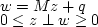
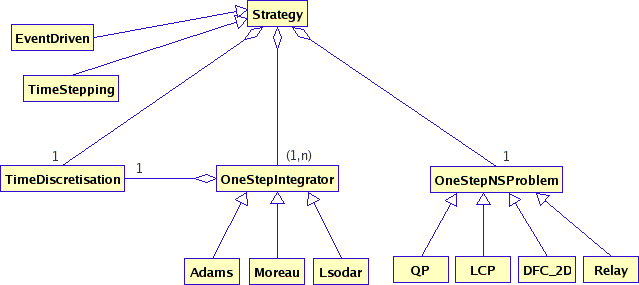

Simulation component
To find more details on objects described in this section, see
Doxygen
documentation of Siconos/Kernel.
The purpose of this component is to define a strategy to compute the
behavior of a non-smooth dynamical system.
It then needs a complete NonSmoothDynamicalSystem (see
modeling component), some
time-integrators (one per dynamical system, see OneStepIntegrator
object) and the description of a non-smooth problem (OneStepNSProblem
Object).
Thus, the simulation component contains the following classes:
- Strategy
: the main class of this component. It contains a time discretization
scheme, a STL
vectors of
OneStepIntegrator and a OneStepNSProblem object.
This class provides also all the routines to solve the non smooth
problem.
Main
computation steps are:
- nextStep: increment time step and save last
step state in memory (swapInMemory function)
- computeFreeState: integrate dynamical system, using
OneStepIntegrator, without taking into account the non smooth part of
it.
- computeOneStepNSProblem: to formalize and compute
the
non-smooth problem; it provides input-output values (y and lambda, see
Interaction object in modeling component).
- update: fully-integrate dynamical systems, taking into
account their non-smooth part.
Two strategy types are available:
- TimeDiscretisation: the
time discretization scheme. It depends on time boundary values given in
the model (see model component).
- OneStepIntegrator:
describes the way each dynamical system is integrate. It obviously
depends on the time discretization. There is one OneStepIntegrator for
each dynamical system.
Three types of integrators are available:
For details see theory manual or specific examples in templates.
- OneStepNSProblem: used
to formalize the complete non smooth problem, taking into account
interactions between dynamical systems. This object is composed with a STL vectors of
Interactions (those of the NonSmoothDynamicalSystem) and information on
solver and solving method.
Three problem types are available:
- DFC_2D: dual friction contact in two dimensions.
- LCP: Linear complementary problem. Solve a non-smooth
problem of the
form:

- QP: quadratic formulation
- Relay
SimulationTools classes diagram
